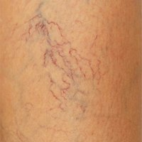

Безболезненное исследование родинки врачом с помощью дермотоскопии
У нас в клинике «Лазерсвiт» точный диагноз за 30 минут
Анамнез и визуальный осмотр
1
Исследование с помощью электронного дерматоскопа
2
Персональные рекомендации и профилактические мероприятия
3
Вначале врач-дермотолог изучит историю ваших болезней, выслушает все ваши жалобы и задаст ряд вопросов.
Затем проведёт визуальный осмотр и тщательно изучит все ваши новообразования на коже. Это могут быть не только родинки, но и папилломы, кератомы, бородавки, родимые пятна и т.д.
Большинство пациентов всё это называет словом «родинки». Врачи говорят, новообразования.
Особое внимание уделим тем, что вас беспокоят.
Все сомнительные новообразования исследуются электронным дерматоскопом.
Дерматоскоп — своего рода «ручной микроскоп», с помощью которого верхняя часть кожи может быть увеличена в шестнадцать раз.
Мы используем немецкий дерматоскоп DELTA 20 T — новейшую техническую разработку учёных-медиков и инженеров.
Этот диагностический прибор с высочайшей точностью позволяет распознать меланомы на ранней стадии.
Врач-дермотолог даст рекомендации по режиму загара, который будет безопасным лично для вас и расскажет о профилактических мероприятиях по уходу и защите родинок.
Также врач посоветует, можно ли оставить новообразование или рекомендует его удалить.
Если новообразование не злокачественное, но постоянно травмируется или доставляет эстетические неудобства, врач удалит его самым быстрым и безболезненным способом.
Посмотрите, может быть вы в группе риска
Если у вас есть один или сразу несколько из этих 7 признаков, то стоит записаться к дерматологу...
Мы рекомендуем проходить обследование 2 раза в год, если:
У вас светлая кожа (значит, есть склонность к солнечным ожогам);
У вас много веснушек или темных родинок;
У кого-то из ваших кровных родственников рак кожи;
Вы любите загорать или бывать в солярии;
У вас более 50 родинок на теле;
Вы часто травмируете родинку (натирает одежда, обувь, бельё, мочалка, расчёстка или новообразование находится в естественных складках: подмышечная, локтывые сгибы, подколенные ямки);
Если ваша родинка больше полутора сантиметров.
Как осмотреть родинку самостоятельно
Если вы заметили у себя хоть один из этих признаков, нужно обратиться к врачу за консультацией. Но даже если совпали все пять признаков, это ещё не значит, что у вас рак кожи.
Асимметрия
А
Края родинки
К
Окраска
О
Размер
Р
Динамика
Д
Мысленно разделите родинку на две равные части. Если обе половинки одинаковы по размеру и форме — это признак доброкачественного образования, всё в порядке.
Нечеткие края одной из половин — повод для беспокойства.

Родинка
Меланома
Границы родинки должны быть плавными и четкими.
Зубчатые, неровные края, закручивающиеся наросты беловатого или темного цвета на родинке — повод для беспокойства. Это может быть меланома.
Родинка
Меланома
У доброкачественной родинки окраска одного цвета. Однородная.
Если же вы наблюдаете изменение окраски новообразования, если в родинке присутствует несколько цветов, то это повод для подозрения.
Родинка
Меланома
Родинка
Меланома
Как только вы поняли, что ваша родинка увеличивается в размерах, сразу обращайтесь к дермотологу!
Это немаловажный фактор, который сигнализирует нам о наличие злокачественных процессов.
Родинка
Меланома
Любые нарушения целостности родинки, появление трещин, кровоточивости, болезненных ощущений при надавливании не должны оставаться без внимания.
В среднем удаление 1 небольшого новообразования занимает 1-2 минуты.
Даже дети не успевают заплакать за это время :)
Если нужно удалить сразу много «родинок», то требуется уже 30-40 минут.
Без боли
Без боли
Импульс лазера слишком короткий — боль просто не успевает ощущаться.
В нашем оборудовании встроена система охлаждения тканей — это также помогает делать процедуру безболезненной.
Но если новообразования у пациента крупные, то в дополнении используем местную анестезию.
Быстрое заживление
Быстрое заживление
После воздействия лазера появится корочка, которая отпадёт в течение недели.
Покраснение спадёт за две-три недели.
Без рубцов и шрамов
Без рубцов и шрамов
Лазерный луч толщиной всего 200 мкм, поэтому он поражает только клетки новообразования, не затрагивая окружающих здоровых тканей.
Лазерный луч «выпаривает» новообразования и запускает процессы обновления клеток, возвращая коже упругость и идеальную гладкость. Поэтому и не остаётся шрамов.
Удаляется навсегда
Удаляется навсегда
Новообразование удаляется полностью и больше не возникает.
Есть исключение — папилломы.
Папилломы вызываются вирусом папилломы человека — это инфекционное заболевание. Элиминировать (вывести) вирус из организма невозможно. Поэтому папилломы могут появиться вновь, но уже на других участках кожи.
Абсолютная стериальность
Абсолютная стериальность
Место обработки обеззараживается бактерицидным действием лазерного луча.
Без кровотечения
Без кровотечения
Лазер моментально останавливает кровотечение, «запаивая» в процессе нагретые стенки сосудов.
То есть лазер используется и как коагулятор сосудов.
Благодаря этому удаление оказывется практически безкровным
Правда о том, что будет после удаления новообразования
Многие не приходят к врачу пока не почувствуют боль в ноге. На самом деле, даже очень большие варикозные вены могут не болеть долгие годы. Боль начнётся уже при серьёзных осложнениях вроде тромбоза, флебита, спонтанного кровотечения...Не запускайте болезнь!
Признаки
Сосудистые «звёздочки» и паутинки на ногах
Судороги в ногах
Изменение цвета кожи
Ежедневные отеки к вечеру
Усталость ног в конце рабочего дня
Мелкие сосудистые звездочки — тревожный симптом. Значит, кровь в нижних конечностях застаивается, повышается давление, вены расширяются. «Звездочки» питает какая-то глубокая вена, лечением которой и нужно заняться. В 90% случаев эти проявления первые симптомы варикозной болезни.
«Паутинки» на ногах тоже далеко не безвредны. Стоит бить тревогу, если в вашей семье уже есть те, кто страдает от варикозного расширения вен или трамбофлебита — не стоит ждать осложнений, лучше сразу идти к флебологу и пройти УЗИ.
Чаще всего толчком к появлению «звездочек» и «паутинок» служат гормональные изменения — особенно беременность или прием контрацептивов.
Не занимайтесь самолечением. Назначить лечение врач может только по результатом осмотра, анализов и УЗИ.
Если судороги в ногах возникают редко, нерегулярно и не доставляют особого дискомфорта, то волноваться, скорее всего, не стоит. А если они протекают часто и болезненно, то это весомый повод обратиться к специалисту. Врач-флеболог не только осмотрит ваши ноги, но и обязательно произведёт дуплексное сканирование для проверки вен и сосудов.
Самая частая причина судорог — нехватка витаминов В6 и магния. Наблюдается при обезвоживании, неправильном питании, физических нагрузках.
Если в рационе много животного жира — это повышает плохой холестерин в крови. Как следствие, атеросклероз, который увеличивает нагрузку на вены и сосуды.
Если судороги — симптомы тромбофлебита и варикозного расширения вен, то причиной могут быть сердечно-сосудистые заболевания. А также отёчность и постоянная боль в конечностях, т.к. во всём организме затруднён кровоток.
Не затягивайте, чтобы не страдать от осложнений. Запишитесь прямо сейчас к врачу-флебологу.
Потемнение кожи на голени или стопе — признак многих серьёзных заболеваний. Например, сахарного диабета, т.к. нарушается кровоток всего организма.
Но, возможно, всё дело в варикозном расширении вен, тромбозе или венозной недостаточности.
Это не косметическая проблема, мази тут не помогут, т.к. причина в застое крови, медленном кровотоке или отсутствии кислорода в тканях. Лечить нужно изнутри.
Причиной заболевания может быть работа, если вы весь день на ногах — это серьёзно отражается на состоянии вен и сосудов.
Наследственность — вы попадаете у группу риска, если в вашей семье уже есть случаи проблем с венами. Причинами ещё могут быть травмы, хирургические вмешательства, тяжелые виды спорта и гормональные изменения.
Обязательно проконсультируйтесь с флебологом!
Отеки — это скопление жидкости между клетками в организме. Особенно сильно проявляется в вечернее и ночное время. Доставляет кроме эстетических проблем ещё и болевые ощущения.
Часто отеки — первые признаки развития варикоза.
Замечали вы раньше на ногах «звездочки» из сосудов? При варикозе ноги отекают нередко уже после появляется таких небольших «звездочек» на ногах.
Основные факторы, которые приводят к варикозу и отёкам:
— Наследственность ;
— Лишний вес;
— Беременность;
— Длительное нахождение на ногах.
Усталость ног — это повод для бескокойства. Редко кто относится к этому серьёзно, но на самом деле это может говорить о наличие серьезной патологии.
С другой стороны, если усталость проходит быстро, то ещё рано бить тревогу.
Как же отличить обычную усталость после работы от первой стадии варикоза?
Вместе с усталостью ног вы чувствуете жжение, боль, отёчность? Появляется ли сосудистая сетка? Чувствуете в спокойной положении или во время ходьбы острую пульсирующую боль? Вас беспокоют судороги в ночное время?
Если хотя бы на один из вопросов вы сказали «да», то это повод обратиться за консультацией к врачу-флебологу.
Пользовательское соглашение
Я согласен(а) с условиями политики конфиденциальности и разрешаю использовать мои персональные данные на законных основаниях.
Персональные данные
На виконання вимог Закону України "Про захист персональних даних" даю згоду на обробку моїх персональних даних з метою забезпечення реалізації цивільно-правових відносин.
Ми цінуємо Ваше право на особисте життя та нерозголошення Вашої персональної інформації. Ця Політика конфіденційності - правило, яким користуються всі співробітники нашого сервісу, та регламентує збір і використання особистої інформації, яка може бути запрошена/отримана при відвідуванні нашого веб-сайту http://institutven.com.ua, при використанні сервісу, при замовленні, листуванні або телефонній розмові. Якщо у Вас виникнуть питання або проблеми у зв’язку з конфіденційністю, надсилайте, будь ласка, свої питання або зауваження на електронну адресу: institutven@gmail.com
Яку інформацію ми збираємо
На нашому сайті, в разі, коли Ви робите замовлення, берете учать в акції, дослідженнях або іншим чином взаємодієте з нами, ми збираємо як особисту інформацію, так і загальні дані.
Особиста інформація стосується окремого споживача - приміром, ім'я, адреса, номер телефону, e-mail, тощо. Такі дані ми отримуємо лише від осіб, які надають її свідомо та з власного бажання. Наприклад, зареєструвавшись на нашому сайті, або вказуючи ім'я та адресу із запитом на отримання подальшої інформації від нас. Ми не вимагаємо реєстрації або надання такої інформації для перегляду нашого сайту та отримання доступу до його змісту.
Для того щоб зробити замовлення товарів/послуг, брати участь у акціях, дослідженнях або іншим чином взаємодіяти з нами, Ви повинні уважно ознайомитися з Вашими правами та обов’язками щодо обробки персональних даних, які зазначені в ст. 8 З.У. «Про захист персональних даних» , уважно ознайомитися з даною Політикою конфіденційності, а також висловити свою повну згоду з їх умовами.
Якщо Ви не погоджуєтеся з будь-якою з умов даної Політики конфіденційності та вищезазначеного Положення про захист персональних даних, будь ласка, не надавайте особисту інформацію.
Згоду на використання Вашої особистої інформації Ви можете відкликати в будь-який момент. Для цього достатньо надіслати повідомлення електронною поштою, з поміткою в темі листа «Персональні дані», за адресою: institutven@gmail.com
Чому ми обробляємо персональні дані
Персональні дані - відомості чи сукупність відомостей про фізичну особу, яка ідентифікована або може бути конкретно ідентифікована.
Ми можемо обробляти Ваші персональні дані для наступних цілей. При цьому одночасно можуть застосовуватися одна або кілька цілей.
Отримання замовлення. Ми можемо використовувати Ваші персональні дані для отримання замовлення, яке Ви зробили, для обробки Ваших запитів, або для інших цілей, які можуть існувати для досягнення кінцевої мети – задовольнити інтереси споживача, а також для запобігання та розслідування випадків шахрайства та інших зловживань.
Спілкування з Вами. Ми можемо використовувати Ваші персональні дані для зв'язку з Вами, наприклад повідомити Вас про зміну наших послуг або надіслати Вам важливі повідомлення та інші подібні повідомлення, що стосуються замовлення, що було Вами зроблено та зв'язатися з Вами в цілях, пов’язаних з обслуговуванням споживача/клієнта.
Ми діємо відповідно до цієї Політики конфіденційності, на підставі Положення про обробку і захист персональних даних та на підставі чинного законодавства України. Володільцем персональних даних є ТОВ «Iнстiтут Вен», що знаходиться за адресою : м. Харкiв, вул. Ярослава Мудрого , буд. 37. Ми маємо право зберігати Персональні дані стільки, скільки необхідно для реалізації мети, що зазначена у даній Політиці конфіденційності або у строки, встановлені чинним законодавством України або до моменту видалення Вами цих даних.
Як збираємо інформацію
Особиста інформація, як ми зазначили вище, надходить безпосередньо від Вас, та з Вашого відома. Так, коли Ви реєструєтеся на сайті, ми отримуємо надану Вами інформацію. Коли Ви реєструєтеся в промо-акції, ми збираємо інформацію, необхідну для Вашої участі, аби виконати наші зобов'язання перед Вами. Коли Ви здійснюєте замовлення товару, ми збираємо вказану Вами інформацію, щоб мати змогу оформити замовлення та доставити його Вам. Коли Ви надсилаєте нам електронного листа, ми зберігаємо вказану Вами адресу електронної пошти, щоб мати змогу відповісти.
Також ми постійно збираємо загальну інформацію, коли Ви заходите на наш веб-сайт. Процес збору таких даних відбувається з допомогою технологій cookies, як пояснюється нижче.
Cookies
Як і багато інших компаній, ми використовуємо технологію cookies на нашому сайті та поза його межами. Cookies - це уривки інформації, які веб-сайт передає на жорсткий диск споживача для зберігання інформації, пов’язаної з веб-сайтом. Ця технологія розширює Ваші можливості використання інтернету, зберігаючи Ваші пріоритети під час перегляду певного сайту. Технологія cookies не містить особистої інформації і не може жодним чином налаштовувати Вашу систему або зчитувати інформацію з Вашого жорсткого диска.
Під час перегляду нашого веб-сайту ми можемо розмістити cookies на Вашому комп'ютері. Такі тимчасові cookies використовують для підрахунку кількості візитів на наш сайт. Вони видаляються, коли Ви виходите з браузера. Постійні cookies можуть зберігатися на Вашому комп'ютері Вашим браузером. Під час реєстрації цей тип cookies повідомляє: вперше Ви до нас завітали чи заходили на наш сайт раніше. Cookie не містять Персональних даних і можуть бути заблоковані Вами у будь-який момент. Сookies не отримують особистої інформації про Вас та не надають нам Вашої контактної інформації, а також не отримують жодної інформації з Вашого комп'ютера. Ми використовуємо cookies для визначення характеристик сайту та пропозицій, які Вам найбільше подобаються з метою надання Вам більше інформації, в якій Ви зацікавлені. Крім того, файли cookie використовуються, щоб зробити веб-сайт http://institutven.com.ua безпечним, захищеним і зручним. Файли cookie забезпечують підтримку функцій безпеки та їх запуск. Файли cookie також дозволяють відстежувати порушення ПОЛІТИКИ КОНФІДЕНЦІЙНОСТІ відвідувачами або пристроями. Файли cookie допомагають оцінити кількість і частоту запитів, а також виявляти і блокувати тих відвідувачів або пристрої, які намагаються виконати пакетні завантаження інформації з веб-сайту.
Ярлик "help" на панелі більшості браузерів проінформує Вас як заборонити браузеру приймати нові cookies, як отримувати повідомлення від браузера, що Ви отримали нові cookies, або як відключити cookies. Пам'ятайте, що cookies дозволяють Вам повною мірою користуватися всіма можливостями веб-сайту http://institutven.com.ua, і ми рекомендуємо Вам залишати їх ввімкненими.
Крім того, веб-сайт http://@institutven.com.ua може містити посилання на сайти, які не управляються ТОВ "Iнстiтут Вен ". Такі посилання наведені виключно для інформаційних цілей.
Технічне оснащення сторінок сайту http://institutven.com.ua може включати в себе модулі:
Соціальної мережі Facebook (facebook.com), управління якої відбувається зі штаб-квартири компанії Facebook Inc , Facebook li Corporate Office, який знаходиться за адресою: Headquarters 1601 S. California Ave . Palo Alto , CA 94304 , USA, телефон: li +1 (650 ) 543-4800
Інформаційної мережі Twitter (twitter.com), управління якою здійснюється з офісу компанії Twitter , Inc., який знаходиться li за адресою: 1355 Market St, Suite 900 San Francisco, CA 94103, USA, телефон: +1 ( 415 ) 222-9958;
Соціального форуму Youtube (youtube.com) , управління яким здійснюється з офісу компанії YouTube, LLC, який знаходиться за li адресою: 901 Cherry Ave., San Bruno, CA 94066, USA, телефон: +1 (650 ) 253-0000
Соціальної мережі "ВКонтакте" (vk.com), управління якою здійснюється з офісу ТОВ "В Контакті", який знаходиться за li адресою: вул. Тверська , буд. 8, літ. Б, м. Санкт -Петербург, 191015, Росія.
Соціальної мережі Google+ (http://www.google.com/intl/ru/+/learnmore/better/), управління якою здійснюється з офісу компанії 1600 Amphitheatre Parkway, Mountain View, CA 94043, USA, телефон: +1 ( 650 ) 253-0000.
Ці модулі можуть бути кнопками синхронізації аккаунту на веб-сайті http://institutven.com.ua , Like, ретвітнути або відповідно "Мені подобається". Якщо відвідувач відкривав одну з веб-сторінок, оснащену таким плагіном, його інтернет-браузер безпосередньо підключить його до серверів Facebook, Twitter, LinkedIn, ВКонтакте, Google+ або Youtube. Плагін буде передавати на сервер дані про те, які саме веб-сторінки веб-сайту http://institutven.com.ua відвідувач переглядав. При використанні будь-яких функцій плагіну, ця інформація також буде синхронізована з обліковим записом відвідувача на Facebook, Twitter, ВКонтакте, Google+ або Youtube. Більш детальну інформацію про збір і використання даних мережами Facebook, Twitter, ВКонтакте, Google+ або Youtube, а також про права і можливості щодо захисту персональних даних в даному контексті можна знайти в розділі про конфіденційність на сайтах Facebook, Twitter, LinkedIn, ВКонтакте, Google+ або Youtube
Конкурси та акції
Наш сайт іноді розміщує повідомлення про наші промо-акції, й іноді ми можемо дозволити Вам зареєструватися онлайн. У таких випадках ми використаємо надану Вами інформацію, щоб провести акцію (наприклад, повідомити Вас у разі виграшу). Через певний час після закінчення промо-акції особисту інформацію ми видаляємо із нашої бази даних, якщо Ви не надали згоди на її збереження та використання для отримання подальшої інформації від нас. Беручи участь в акції ви надаєте однозначну згоду на безкоштовне використання вашого імені, прізвища, фотографії, інтерв’ю або інших матеріалів про вас з рекламною метою, у тому числі право публікації вашого імені та фотографії у засобах масової інформації, будь-яких друкованих, аудіо- та відеоматеріалах, інтерв’ю зі ЗМІ. Таке використання не компенсується (не оплачується).
Розголошення та передача даних
Ми не продаємо, не передаємо та не розголошуємо особисту інформацію, яку отримуємо на нашому сайті, третім сторонам без Вашої попередньої згоди. Ми розкриваємо особисту інформацію лише у випадках визначених чинним законодавством України, а також:
Ми розкриємо інформацію в випадку запобігання злочину або завдання шкоди нам або третім особам;
Ми розкриємо інформацію третім особам, що надають нам підтримку та послуги за допомогою яких Ви отримуєте Ваше замовлення.
Може статися, що ми надамо загальну інформацію про наших відвідувачів (наприклад, відсоток відвідувачів сайту жіночої та чоловічої статі) рекламним агенціям, бізнес партнерам, спонсорам та іншим третім сторонам, щоб налаштувати або розширити зміст і рекламу на нашому сайті для наших споживачів. Ми також можемо збирати дані з файлів веб-реєстрації (таких як Ваш веб-браузер, операційна система, відвідані сторінки тощо), щоб зрозуміти, як відвідувачі подорожують сайтом, та які його сторони є найпопулярнішими.
Оновлення цього попередження
Ми можемо в односторонньому порядку змінювати або оновлювати частини цієї політики в будь-який час, без попереднього повідомлення. Будь-ласка, час від часу переглядайте Політику конфіденційності, щоб знати про її зміни та оновлення. Усі зміни до цієї Політики конфіденційності набувають чинності з моменту їх публікації. Коли ви робите замовлення, берете учать в акції, дослідженнях або іншим чином взаємодієте з нами, ви погоджуєтесь з новими умовами Політики конфіденційності в редакції, що діє на цей момент. У випадку визнання недійсною або нездійсненною будь-якої частини даної Політики конфіденційності, інші її частини будуть залишатися чинними.